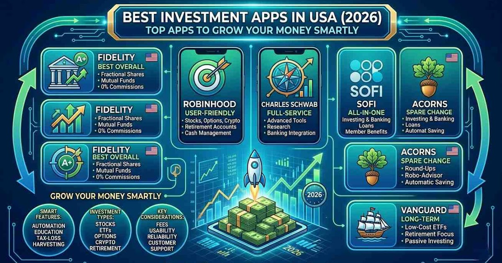

Many people have different ideas about investment. Some people think investment is a good way to grow their money. They believe that if they invest early, they can have more money in the future. These people feel that investment is important for their life goals, like buying a house, starting a business, or saving for retirement.
Other people feel worried about investment. They think it is risky because they can lose money. They prefer to keep their money in a bank, where it feels safe. They do not want to take big risks, especially if they do not understand how investment works.
Some people are interested in learning more about investment. They watch videos, read articles, or talk to experts. They want to understand things like stocks, real estate, or saving plans. When they learn more, they feel more confident.
Young people often see investment as a way to build a better future. Older people may invest to protect their savings. In general, people think differently based on their experiences, knowledge, and goals.
Overall, investment is something many people think about, but everyone has their own opinion. Some feel excited, some feel scared, and some want to learn more before they decide.
A lot of young people want to learn how to invest, and there are apps that make it super easy. You just download the app on your phone, open it, and you can start learning right away. Most of these apps explain money in a simple way, so you don’t feel confused or stressed. They talk about things like saving, setting goals, and what it means to invest in something. Some apps even let you practice with pretend money. It’s like a "game", you can try buying and selling without losing anything real. This helps young people see how prices change and what happens when you make different choices. Other apps give short videos, tips, or daily lessons that are quick to read. These apps are fun because they use bright colors, easy examples, and sometimes even little challenges. You can learn at your own speed, and it feels good when you see yourself getting better. Investment apps are a cool way for young people to learn about money. They help you feel more confident and teach skills that can help you in the future.
